Coverage Twin: know what your policy might leave you paying, before admission.
Claim Sach turns health-insurance policy wording into an interactive hospital-bill simulation, showing which potential deductions are calculated, which remain conditional, and exactly why.
Pushkar Mondal · Founding Engineer, Xeliport
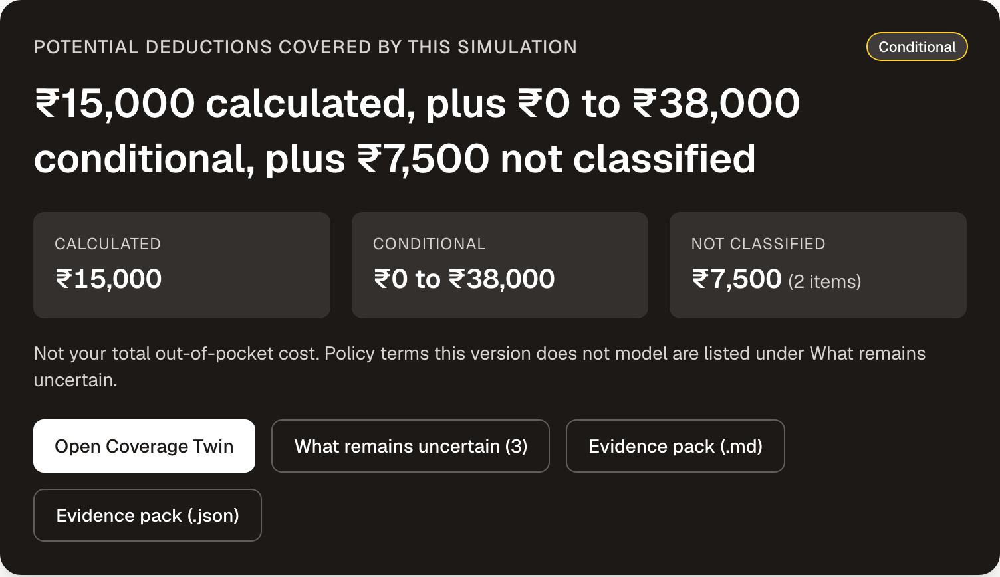
The first thing a user sees: calculated, conditional and unclassified amounts kept apart, never folded into one total.
Room-rent limits, proportionate deductions, ICU limits, co-payments, sub-limits and exclusions surface at admission, not at purchase. Pick a room above the eligible rate and many policies pay the surgeon, the anaesthetist, nursing and the operation theatre only in the proportion eligible ÷ actual rate. It is not about the room.
Worked example on a synthetic policy and estimate, computed by the prototype and checked by hand (appendix, slide 22). Not a market statistic.
Which items are touched depends on the policy's own definition, on facts only the hospital knows, and on clauses the policyholder has never read. General explainers stop at the concept. The gap we are testing is applying your wording to your bill.
Wording and schedule, synthetic or real, labelled which.
Each rule cites its clause and quotes it in full.
Room, rate, days, the hospital's own line items.
Room excess, ICU excess, proportion, co-payment.
Page-cited, verbatim, beside every number.
What is open, what is at stake, who can settle it.
₹15,000 calculated, ₹0 to ₹38,000 conditional, ₹7,500 not classified. Not a total, and it says so.
Change the room; the itemised breakdown updates at once with the cause rule per row.
Ask the hospital, ask the insurer, resolve now; plus what this version does not model at all.
Switch to Arogya Sanjeevani and watch the same engine refuse to guess where the wording is silent.
Not a chatbot. Not a payout guarantee. A scenario estimate of the deductions it covers, with its unknowns on screen. Six screens, two wordings, one command, offline. Everything on these slides runs today; what is proposed is marked as such on slide 11.
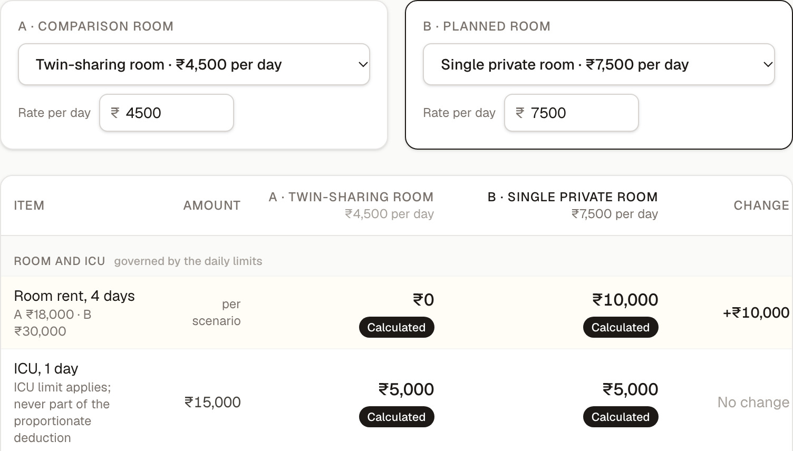
Twin-sharing (A) against single private (B), same policy, same estimate. The room row changed: ₹0 against ₹10,000 above the limit, clause C1. The ICU row did not: its limit never depends on the room.
Only the rows a rule touched light up. The rest stay exactly as they were.
Clause and page, inputs with where they came from, the formula, the result.
Until the hospital confirms differential billing, the surgeon's deduction is ₹0 to ₹20,000.
Lines the wording never classifies stay out of every total, and the panel says who can settle them.
A line the wording never classifies shows a dash and stays out of every total. A conditional amount shows both bounds and the condition. The policy terms this version does not model are listed on screen (appendix, slide 16).
The plain-words paragraph is generated from the trace by a deterministic explainer, not by a language model.
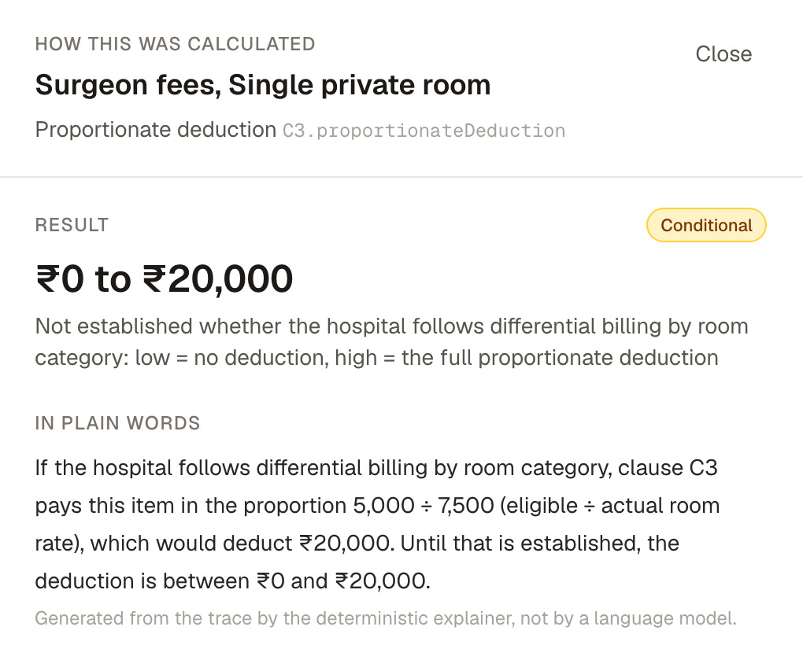
The drawer: result, state, and the explanation in plain words.
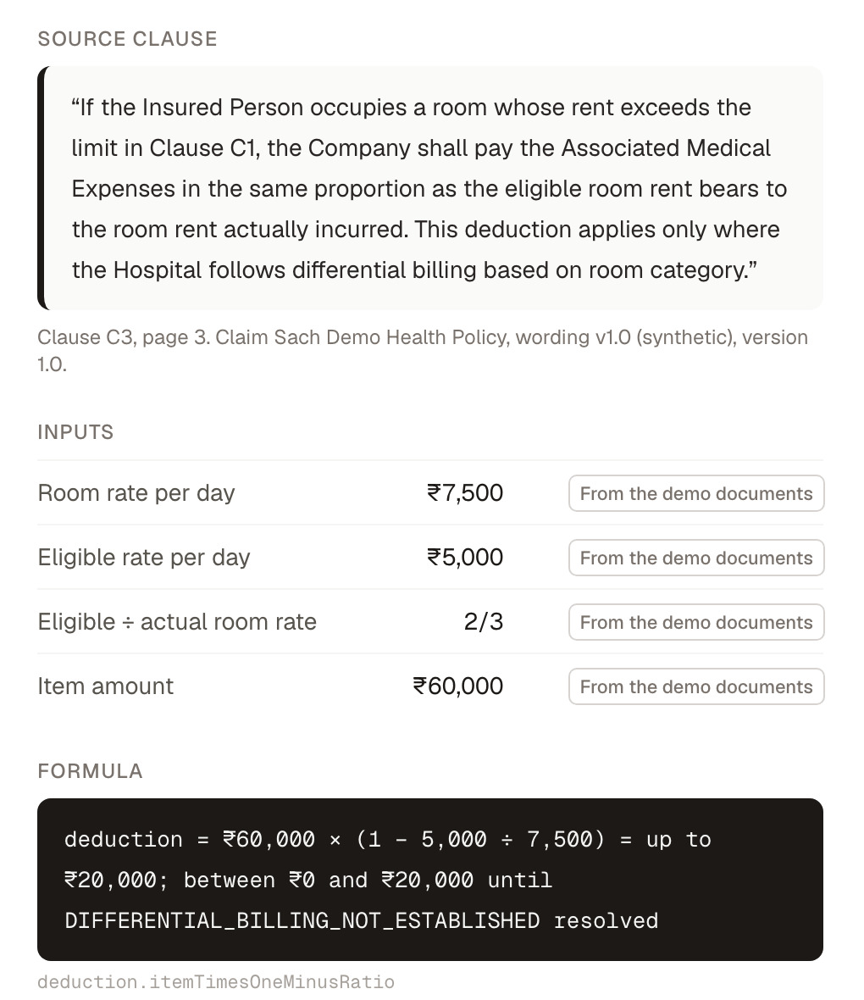
The clause, the inputs with provenance, the formula with the open code.
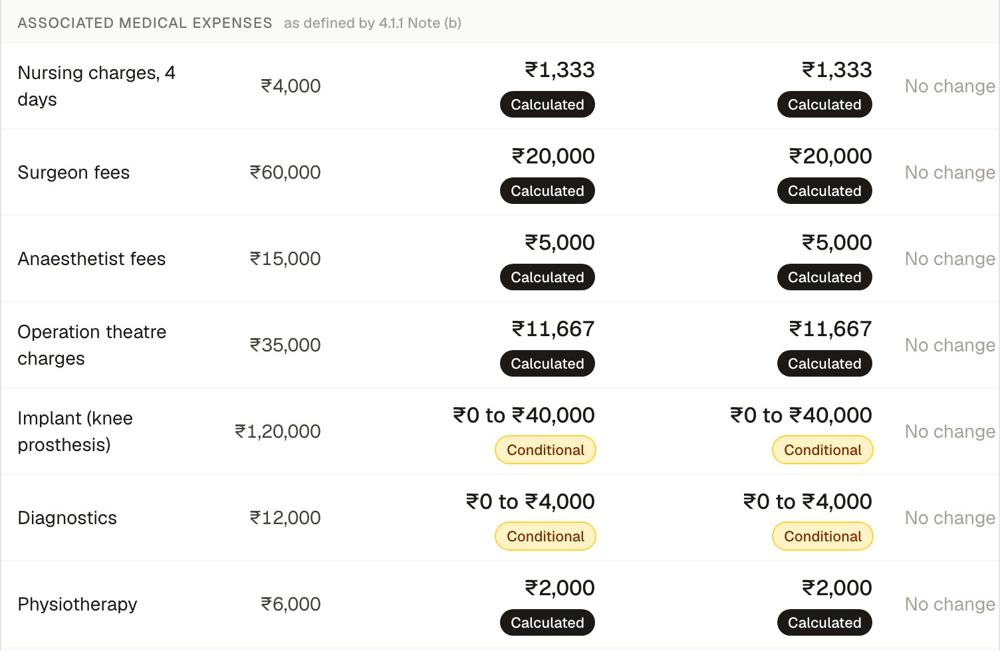
Arogya Sanjeevani, New India, UIN NIAHLIP20165V011920, from the regulator's copy: ten clauses verbatim, page-cited, SHA-256 on screen; partially encoded, synthetic schedule; every figure hand-checked on slide 22.
Room 2% of the sum insured up to ₹5,000 a day; ICU 5% up to ₹10,000. For each category the applicable daily limit is the lower of the percentage-of-sum-insured amount and the stated daily cap; the trace shows both.
A ₹15,000 ICU day exceeds its cap, so Note (b) applies the proportion even in the twin-sharing room: the surgeon's ₹20,000 shows in both columns. Differing ratios give bounds, not a number.
5% of the admissible amount: ₹9,900 to ₹13,425 while implants and diagnostics are open; one figure only when everything else is settled.
Implants and diagnostics: a potential conflict with later norms, not a legal conclusion. Note (b) reduces "all other expenses … with the exception of cost of medicines", which reaches implants and diagnostics. IRDAI's circular IRDAI/HLT/REG/CIR/151/06/2020 of 11 June 2020 says in clause 4 that pharmacy and consumables, implants and medical devices, and diagnostics "are not allowed to be part of the definition of 'associate medical expenses'", in clause 7 that no proportionate deduction may be applied to ICU charges, and in clause 8 that it applies to products filed from 1 October 2020 and to existing contracts at renewal from 1 April 2021. The Master Circular of 29 May 2024 supersedes it (Annexure-6, item 19); whether the norm continues is not verified here. The insurer's current customer information sheet (UIN NIAHLIP25044V022425, w.e.f. 1 October 2024, read 25 October 2026) carries the same Note (b) sentence; this demo encodes the 2019-20 filing as a version-sensitivity test, not a statement about any current contract. So the engine shows implants and diagnostics as ₹0 to ₹40,000 and ₹0 to ₹4,000, "requires insurer confirmation", and the question sheet asks the insurer in writing.
TypeScript, strict. Next.js 16 (App Router), React 19, Tailwind 4. Six screens on a tested screen model; no business logic in components.
Pure TypeScript, no I/O, no model. Integer paise, exact ratios, one half-up rounding. A trace on every amount: rule, inputs, clause, formula, output, open assumptions. Six result states, eleven named uncertainty codes (appendix, slide 21).
A synthetic demo policy, and Arogya Sanjeevani (New India, from irdai.gov.in): ten clauses quoted verbatim, page-cited, SHA-256 shown. Partially encoded and labelled so.
The Ruleset builder: a model proposes rules with quotes; the engine verifies each quote verbatim; a person confirms. Cached proposals in this build; the live adapter is off and was not exercised. Never in the calculation path.
Vitest, 181 tests in 18 files, written first. GitHub Actions on every pull request. Evaluation harness: six measures over two wordings, results committed and checked for staleness.
One command, offline on a laptop; fonts bundled; Vercel-ready. Nothing the user enters leaves the browser. No key, no account, no analytics, no database.
fixture or upload (JSON, CSV) → ingestion: schema + verbatim evidence check → screen model → rules engine: classify → limits → proportion → co-payment → traces → six screens, room ladder, question sheet, evidence pack
AI seam, off by default: public clause text → model proposals → verbatim quote check → human confirmation → ruleset. No schedule, bill or name ever leaves the browser.
Clause and page, inputs with where they came from, the formula, the operation. Tampered traces fail validation.
Items the wording does not classify stay out of every total. A conditional amount shows both bounds and the condition.
Two rooms side by side, the rule behind every changed row; the ladder and the question sheet turn it into a decision and a call script.
Arogya Sanjeevani, ten clauses verbatim with a checksum; where the 2019-20 text may conflict with IRDAI's 2020 norms, the engine flags it for insurer confirmation instead of deciding.
Claim Sach turns a policy wording into a verifiable hospital-bill simulation: change the room, inspect every modelled deduction, and see what the documents cannot determine.
Not the first to read clauses; not a payout guarantee; no accuracy figure beyond the measured ones. A bounded review of nine public sources found no tool doing this; we claim we looked, not that nobody does.
The room decision with its deductions visible before admission, not after. Questions for the hospital and the insurer written out: what to ask, and what it is worth.
The clause on screen during the call. The uncertainty list is the call script; the evidence pack is the written answer.
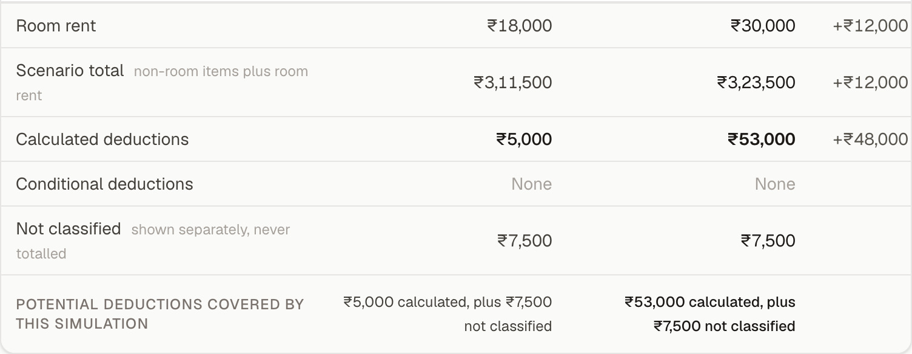
One row decides it: ₹5,000 against ₹53,000 of calculated deductions once billing practice is confirmed.
| Measure | Synthetic | Real wording |
|---|---|---|
| Clause retrieval, top-1 | 11 of 12 | 10 of 12 |
| Rule extraction, field-level | 10 of 10 | 10 of 12 |
| Calculations, exact paise | 9 of 9 · 46 amounts | 3 of 3 · 29 amounts |
| Uncertainty and refusal | 6 of 6 | 3 of 3 |
| Proposal quotes verbatim (cached) | n/a | 6 of 6 |
| Proposals agree with reviewer (cached) | n/a | 11 of 13 |
Measured on the synthetic wording and on ten encoded clauses of one real wording; proposals are cached, not a live run; results re-run on 25 October 2026, unchanged. No accuracy figure appears in the product. Every figure is a potential deduction covered by the simulation, never total out-of-pocket cost; every real-wording figure on these slides is hand-checked against the clauses on slide 22.
| Hypothesis | Test |
|---|---|
| Fewer claim-time support contacts and disputes | Four-week pilot at one claim-assistance desk, against a matched cohort |
| More eligible-room choices when the consequence is visible | Room-change rate in the simulator, then claims data |
| Panel insurers co-fund a coverage-clarity tool | Three conversations; one signed pilot letter is the pass |
| A coverage check lifts conversion or renewal on the policy page | A/B test, if Paytm chooses to run one |
Inside the health-policy journey and claim assistance; the return is retention and fewer disputes.
Panel insurers co-fund coverage clarity for the policies they sell; a signed pilot letter is the pass.
The question sheet and the evidence pack as part of a paid assistance service.
Which option, if any, depends on the tests above. No Paytm integration is claimed or built. Bima Sugam is not live; it belongs in the future tense.
Shortlist us and we bring a laptop. Three minutes: change the room, open a number, watch the engine refuse to guess on a real wording.
Code, tests, documents and the calculation audit: github.com/Pushkarmondal/paytm-hackathon · the proof, problem by problem, follows as an appendix.
Slides 1 to 11 are the pitch. These show the working product on each problem, with whole-element screenshots from the running app. Every entry is a link.
| # | What goes wrong for the policyholder | What Claim Sach does, as built | Where · slide |
|---|---|---|---|
| 01 | A room above the eligible rate cuts the surgeon's fee, not just the room | Applies the proportion (eligible ÷ actual) item by item, with the ratio and the clause on each row | Coverage Twin · 4 |
| 02 | Which items are cut depends on this wording's own definition | Every line classified by the policy's text: included, excluded, or unknown; never one ratio over the whole bill | Twin · 14 |
| 03 | A fact only the hospital knows: does it bill differently by room? | A range with both bounds until it is confirmed; the answer is recorded as yours in every trace | Uncertain, Input review · 15 |
| 04 | Items the wording never mentions get quietly treated as ₹0 | Unknown is never zero: shown apart from every total, with who can settle it; the not-modelled list is on screen | Uncertain · 16 |
| 05 | ICU rates and capped percentage limits behave differently from room rent | Lower of percent and cap; ICU can trigger the proportion; two different ratios give bounds, not a guess | Real wording · 6 |
| 06 | A co-payment stacks on everything else | A bounded range until every other amount is settled; a single figure only then | Real wording · 6 |
| 07 | An older wording may conflict with later IRDAI norms | A caveat on the affected items: requires insurer confirmation, with the circular and clause named; a potential conflict, not a legal finding | Real wording · 6 |
| 08 | “How did you get this number?” | A trace on every amount: clause and page, inputs with provenance, formula, result; tampered traces fail validation | Trace drawer · 5 |
| 09 | Encoding a new wording takes an expert | Find the clause by keyword; a model proposes rules with quotes, the engine verifies each quote verbatim, a person confirms | Ruleset builder · 17 |
| 10 | Your real documents, not a demo, and no server to trust | JSON and CSV read in the browser only; schema-checked; misquotes refused; every field correctable with provenance | Input review · 18 |
| 11 | Which room, what to ask, and how to prove it later | Room ladder, question sheet per hospital and insurer, why-this-changed, and an evidence pack with every trace | Ladder, sheet, pack · 19, 20 |
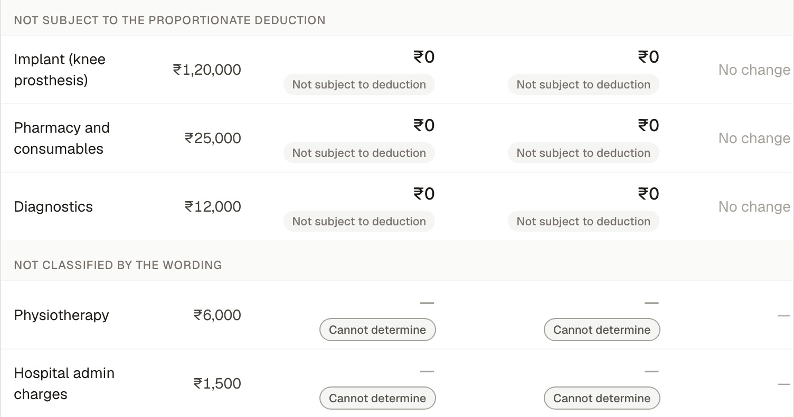
The lower half of the same Coverage Twin table: three lines the demo wording keeps whole, two it never classifies. Rows that cannot be determined show a dash, never ₹0.
The synthetic clause C4 names nursing, surgeon, anaesthetist, consultant and operation-theatre charges. Arogya Sanjeevani's Note (b) says "all other expenses incurred at the Hospital, with the exception of cost of medicines". Same engine, two different lists.
Implant, pharmacy and diagnostics stay whole under C4. Under the real wording only medicines are excepted, so implants and diagnostics are reduced, with a caveat (slide 6). No universal Indian policy is hard-coded anywhere.
Physiotherapy and hospital admin charges are neither named nor excluded by C4. They are shown separately with "Cannot determine". On Input review you can classify them yourself; the choice is recorded as your assumption in every trace.
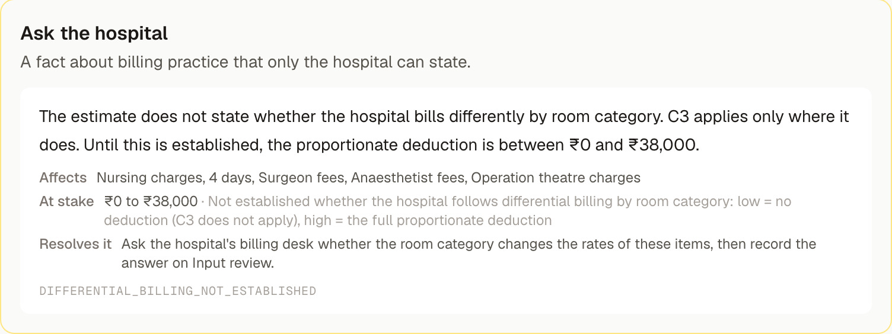
Open question, four items affected, ₹0 to ₹38,000 at stake, and what to ask.
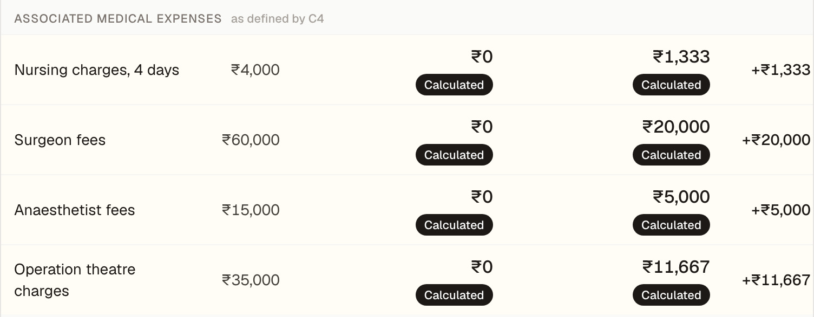
After "Yes, confirmed by me" on Input review: the same four rows, now calculated.
Clause C3 applies only where the hospital bills by room category; the estimate does not say. The surgeon's fee shows ₹0 to ₹20,000: low = C3 does not apply, high = the full proportion. The headline keeps it out of the calculated figure.
Confirm it on Input review and every dependent amount recomputes: calculated deductions move from ₹15,000 to ₹53,000, the open questions drop from 3 to 2, and every trace shows the input as "confirmed by you".
A yes-or-no fact has two computable outcomes, so both are shown. An item the wording never classifies has none, so it stays unresolved and out of every total.
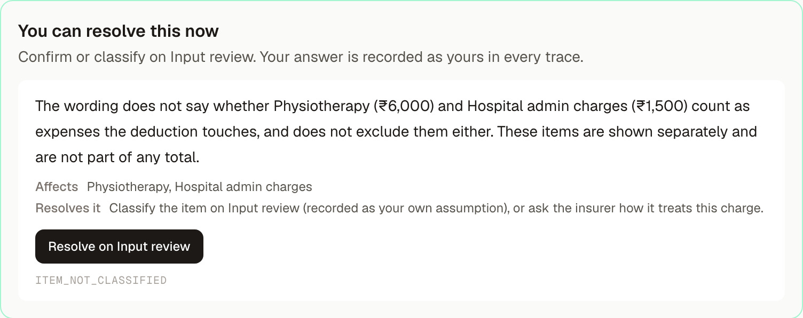
Two lines the wording never classifies, shown apart with the reason and the fix.
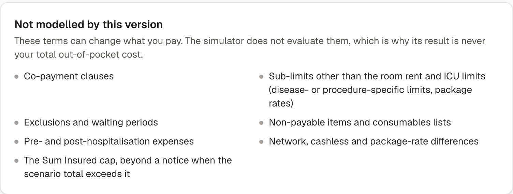
Every term this version does not evaluate, where the user cannot miss it.
| State | Meaning, and how it is shown |
|---|---|
| Calculated | Every input established or confirmed by you, all conditions met. Plain ink; click for the trace. |
| Conditional | The rule applies if a named condition holds. Amber badge; a range with both bounds. |
| Cannot determine | The documents lack or contradict an input the rule needs. Grey badge; a dash, never 0. |
| Not subject to deduction | The policy's own definition keeps the item out of this rule. Neutral badge; the item stays in the bill. |
| Requires insurer confirmation | The policy is silent, or only the insurer can settle it. Blue badge; listed with what to ask. |
| Review required | The schedule contradicts the wording. No amount until a person looks. |
In the code, Money has no unknown value: an unknown amount is the absence of a Money plus an uncertainty code. A total with an unknown inside reads "₹15,000 calculated, plus ₹7,500 not classified", never one figure.
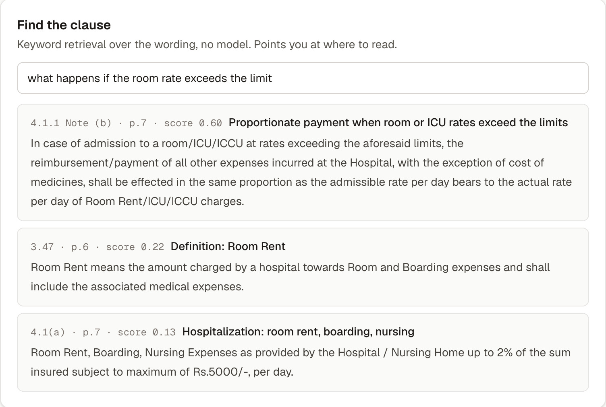
Find the clause: keyword retrieval over the wording, no model, scored and page-cited. It points a reviewer at where to read.
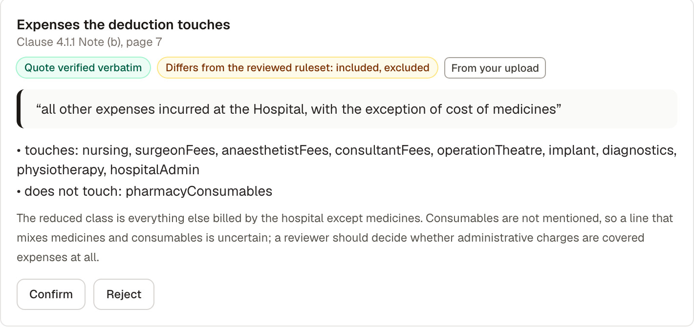
One cached proposal for Arogya Sanjeevani. Three checks on every card: the quote verified verbatim against the clause; agreement with the human-reviewed ruleset, and here it differs; and its provenance.
Confirmed, verified proposals become the active ruleset with the full clause as evidence; a misquote cannot be confirmed. Proposals here are cached and say so; the live adapter returns 503 unless configured and was not exercised. The model never calculates and never sees a schedule, a bill or a name.
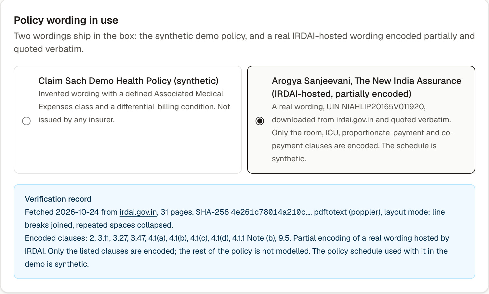
Input review with the real wording selected: the verification record carries the fetch date, source, page count, SHA-256, extraction method and the list of encoded clauses.
A ruleset (JSON), a schedule (JSON) and a hospital estimate (JSON or CSV), up to 5 MB each, read with the File API and never sent anywhere. Schema-checked; a rule that misquotes its clause is refused.
Every value carries a badge: demo documents, your upload, confirmed by you, or entered by you. Correct one and every trace updates. No account, key, analytics or storage.
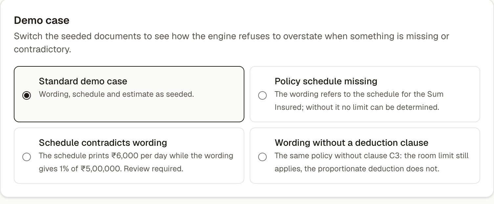
Three failure cases ship as demo variants: the engine refuses to overstate.
Every room on one view with the deductions at each; the highest room within the limit is marked. One click plans it. The product shows; it does not recommend.
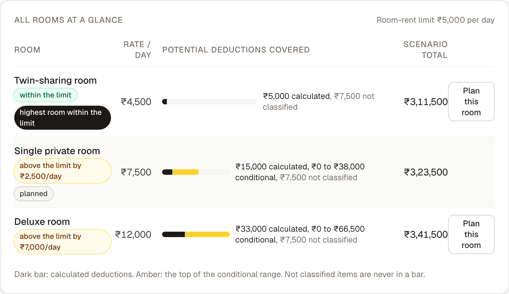
Every open uncertainty becomes a question for the hospital or the insurer, with its clause and the rupees at stake. Copy, print or save; take it to the billing desk.
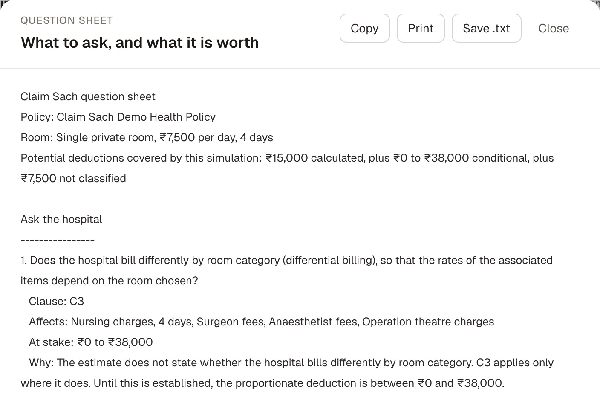
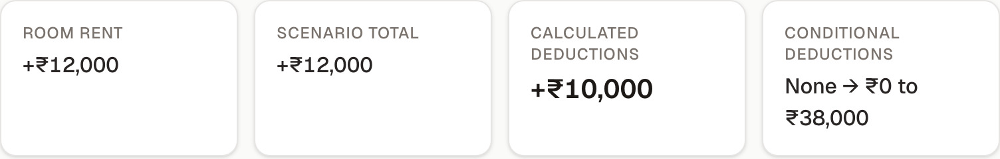
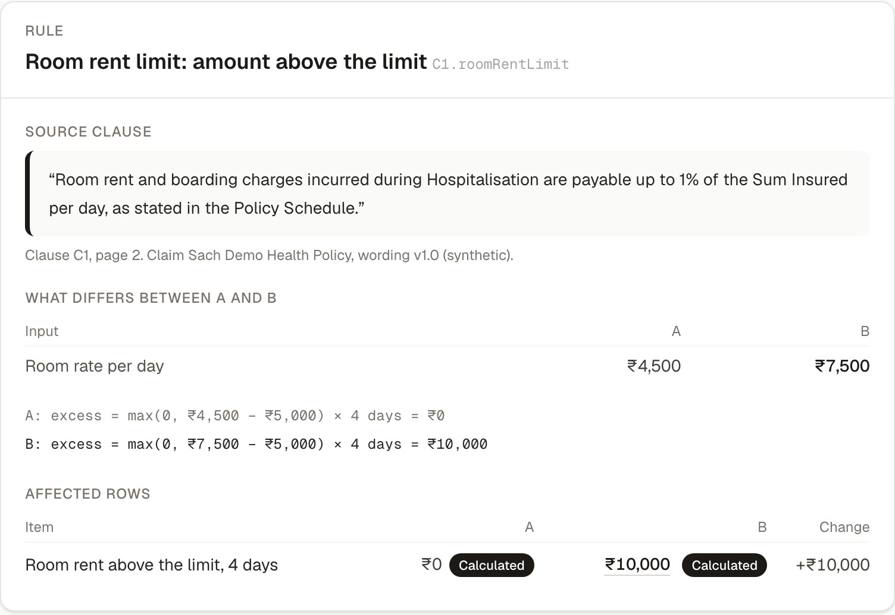
Per rule: the clause, the inputs that differ, both formulas, the affected rows.
Verbatim lines from the exported Markdown evidence pack (JSON is one click away); "…" marks omitted lines.
Money is a branded integer of paise. mulRatio multiplies with BigInt and rounds half up once per operation; nothing is a float.
Eligible ÷ actual stays a reduced fraction (gcd), so 5,000 ÷ 7,500 is 2/3, not 0.6667.
Each wording is its own ruleset with its own definitions. No rule is hard-coded; no single ratio is ever applied to a whole bill.
An unknown amount is the absence of a Money plus an uncertainty code. It cannot be added, so it cannot be totalled by accident.
validateTrace checks each trace against the verbatim clauses and schedules; a tampered or misquoted trace fails. Uploaded rulesets get the same check.
181 Vitest tests in 18 files, written before the code. CI runs lint, typecheck, tests, build and the evaluation harness on every pull request, and fails if the committed results are stale.
| Step | Clause | Arithmetic | Result |
|---|---|---|---|
| Eligible room rate | 4.1(a) | min(2% × ₹5,00,000 = ₹10,000, ₹5,000) | ₹5,000 a day |
| Room excess, single private | 4.1(a) | (₹7,500 − ₹5,000) × 4 days | ₹10,000 |
| Eligible ICU rate | 4.1(b) | min(5% × ₹5,00,000 = ₹25,000, ₹10,000) | ₹10,000 a day |
| ICU excess | 4.1(b) | (₹15,000 − ₹10,000) × 1 day | ₹5,000 |
| Ratio | Note (b) | room 5,000 ÷ 7,500 = 2/3; ICU 10,000 ÷ 15,000 = 2/3; same, applies | deduction = item ÷ 3 |
| Nursing · surgeon · anaesthetist · OT · physio | Note (b) | 4,000 ÷ 3 · 60,000 ÷ 3 · 15,000 ÷ 3 · 35,000 ÷ 3 · 6,000 ÷ 3 | 1,333.33 · 20,000 · 5,000 · 11,666.67 · 2,000 |
| Implant · diagnostics (caveat) | Note (b) | ₹0 to 1,20,000 ÷ 3 · ₹0 to 12,000 ÷ 3 | 0 to 40,000 · 0 to 4,000 |
| Pharmacy and consumables · hospital admin | Note (b) | medicines excepted, consumables not addressed · covered expense not stated | not classified, ₹26,500 apart |
| Calculated deductions | 10,000 + 5,000 + 1,333.33 + 20,000 + 5,000 + 11,666.67 + 2,000 | ₹55,000.00 | |
| Co-payment, low and high | 9.5 | 5% × (3,23,500 − 55,000 − 44,000 − 26,500) · 5% × (3,23,500 − 55,000) | ₹9,900 · ₹13,425 |
| Conditional deductions, jointly | low: no reduction, unclassified not admissible: 0 + 5% × 2,42,000 · high: reduction applied, unclassified admissible: 44,000 + 5% × 2,24,500 | ₹12,100 to ₹55,225 | |
| Twin-sharing room | room excess 0; ICU triggers the same 2/3: 5,000 + 13,000 + 20,000 + 5,000 + 2,000 · jointly 0 + 5% × 2,40,000 to 44,000 + 5% × 2,22,500 | ₹45,000 · ₹12,000 to ₹55,125 | |
| Deluxe room, ₹12,000 | ratios 5/12 and 2/3 differ: × 1/3 to × 7/12; 28,000 + 5,000 calculated · jointly 40,000 + 5% × 2,42,000 to 1,47,000 + 5% × 1,61,500 | ₹33,000 · ₹52,100 to ₹1,55,075 |
Sum insured ₹5,00,000 (synthetic schedule); four room days; non-room items ₹2,93,500. Conditional bounds are taken over every jointly possible outcome of the open questions (sixteen for the deluxe room), so no bound pairs a maximum deduction with a co-payment computed as if it had not happened. Integer paise, reduced fractions, one half-up rounding per multiplication; the compact display drops paise. The engine, run on 25 October 2026, returns the same figures; the harness checks 29 hand-computed amounts on this wording. Full working: docs/deck/CALCULATION-AUDIT.md; re-run with scripts/deck-figures.ts.